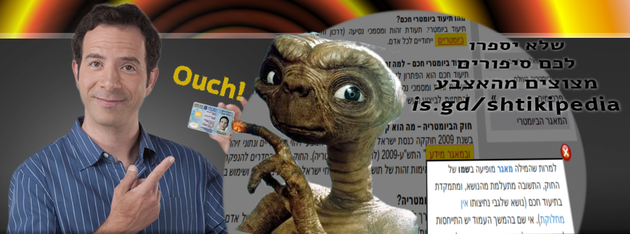

שטיקיפדיה: התוכן
התוכן
לשטיקיפדיה
לעזור
מזלגו את התוכן
מזלגו את הקוד
שטיקיפדיה: התוכן
ארכיון מותאם לסלולרים של התגובות ב
שטיקיפדיה
של
No2Bio
לניווט — השתמשו בתפריט
התוכן

תגובות להטעיות והשמטות נפוצות בדברי רשות האוכלוסין וההגירה